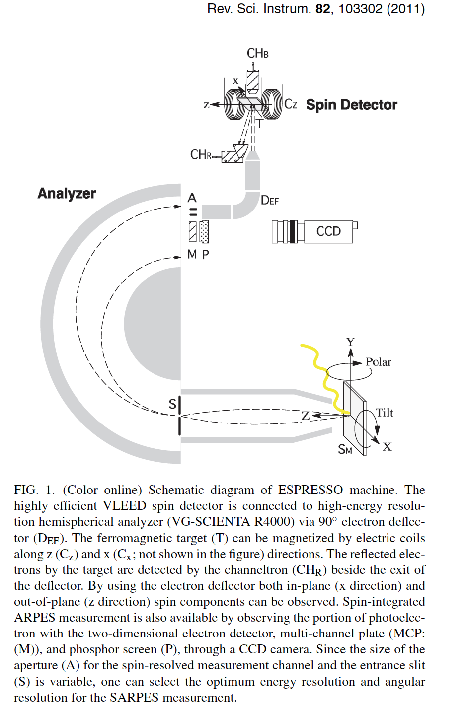

Spin-resolved ARPES setup
VLEED spin detector: The basic principle is we put the photoemitted electrons over a magnetized VLEED (Very Low Energy Electron Diffraction) target, then count the intensity of reflected electrons. Next we reverse the magnetization of VLEED target, and measure the intensity of reflection again. From the asymmetry between these two intensity value, one can obtain the spin polarization of the photoemitted electrons, and therefore the spin polarization of electronic bands inside the materials.
A preoxidized Fe (001)-p(1X1)-O is used as a VLEED target. Other non-oxidized targets degrade relatively quickly.

At photon energy in the soft x-ray range or lower, the contribution due to spin-flip transition is negligible (< 2 \times 10^{−2}) compared to spin-conserved transition.